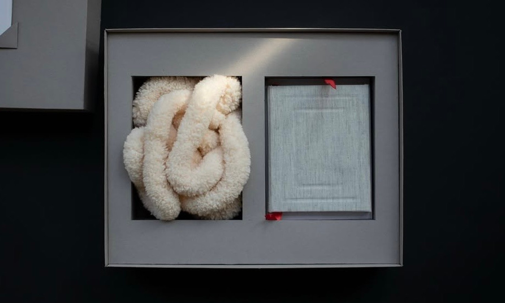
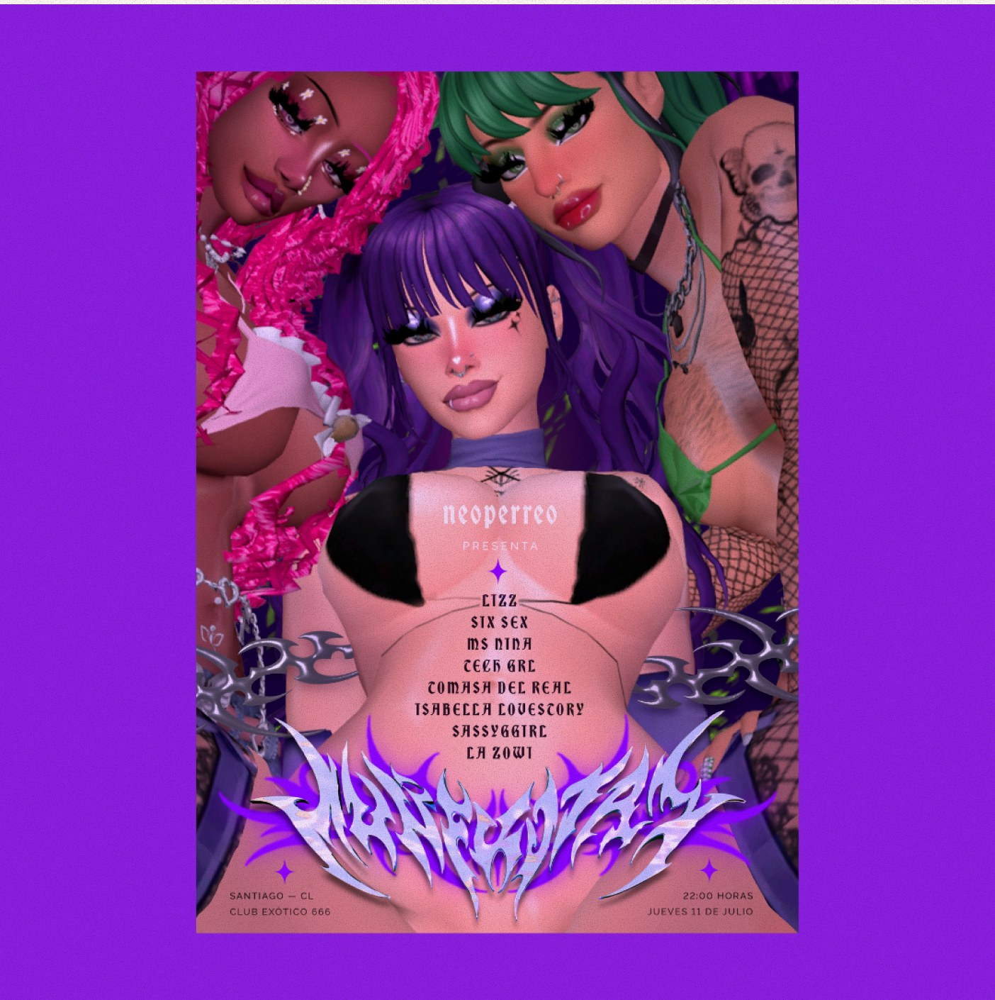
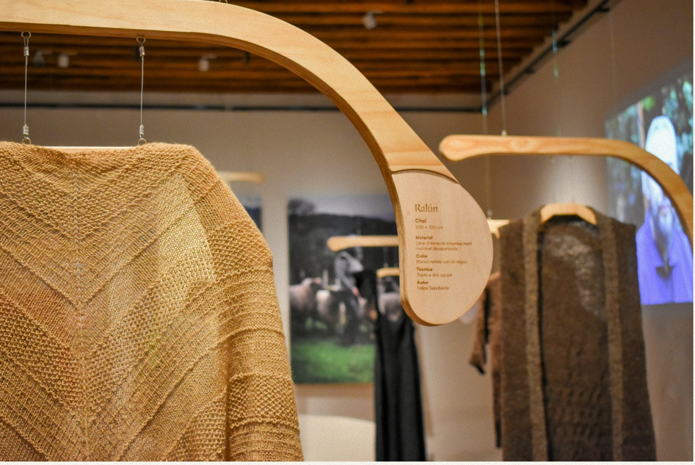

Kit de la postdecepción es un proyecto que aborda la decepción a través de un diario de vida realizado a mano y un conjunto de elementos que acompañan el proceso de reconocer, expresar y trabajar las emociones que surgen después de una experiencia decepcionante. Inspirado en el trabajo de Rocío Guerrero Marín, propone una experiencia íntima y reflexiva mediante objetos, escritura y exploración gráfica.

Neo perreo
Imagen visual para fiesta de neoperreo
Proyecto de identidad visual para un festival de neoperreo, que busca traducir la energía, estética y códigos visuales de este género musical a un sistema gráfico. A través de la experimentación tipográfica, el color y distintos recursos visuales, se construye una identidad que representa su carácter urbano, experimental y contemporáneo.

Por la hebra
Proyecto de memoria textil chilena a través de la lana y la museografía.
Por la Hebra es un proyecto de investigación y propuesta museográfica que busca poner en valor la memoria textil de Chile a través de la lana, sus técnicas y las historias que se transmiten mediante las prendas. La propuesta contempla una exposición en Casa Colorada, donde se presentarán distintas piezas textiles para acercar al público a este patrimonio material y cultural.

Pulso 303
Identidad visual para un festival de música electrónica y estética techno.
Proyecto de identidad visual para un festival de música techno, desarrollado a partir de la exploración gráfica de la cultura electrónica. Mediante composiciones experimentales, contrastes cromáticos y recursos tipográficos, se construye un lenguaje visual que busca transmitir la intensidad y energía de la música electrónica.